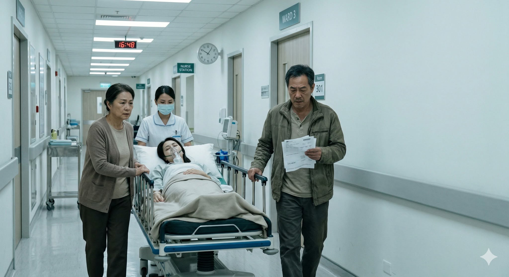

人生情境 · 財富花園
在每個人生階段，種下適合的種子
從房貸、退休、傳承到教育金，陪你從生活情境看懂每一個選擇。每張卡片都是一道人生題，讓你用自己的步調慢慢想、慢慢找到適合的方向。
適合的時機，種下對的種子
專業澆灌，陪伴成長
用心規劃，開花結果
代代相傳，幸福延續

人生考古題 Q1守護種子 · 風險管理
生病這題，你準備了嗎？
收入停下來後，家庭生活與照顧責任還能撐多久？
→ 人生考古題 Q2
人生考古題 Q2整理種子 · 現金流
明明有資產，為什麼還是沒有安全感？
資產不等於流動現金；真正的安全感來自選擇權。
→人生考古題 Q3
整理種子 · 房貸
該先還房貸，還是先投資？
比的不只是利率，也是風險承受度與安心程度。
→人生考古題 Q4
成長種子 · 退休
退休第一年，最容易犯的錯
先把現金流穩住，別急著做不可逆的大決定。
→人生考古題 Q5
開花種子 · 傳承
子女不接班，怎麼辦？
分清所有權與經營權，傳承價值不只傳位子。
→人生考古題 Q6
守護種子 · 教育金
幫孩子買保單，還是存教育金？
兩者解決的問題不同，先分清楚目的。
→女人除了退休金，還需要一筆人生轉身金人生考古題 Q7
守護種子 · 選擇權
人生轉彎時，你有沒有重新選擇的底氣？
這筆錢不是為了離開誰，而是讓自己在生病、照顧或收入中斷時，仍能做決定。
→讀完這片海域後
繼續探索，或回到四片海域選擇方向
每一片海域都從不同角度陪你整理生活與金錢。可以繼續往前，也可以回到全貌，選擇現在最想看的主題。